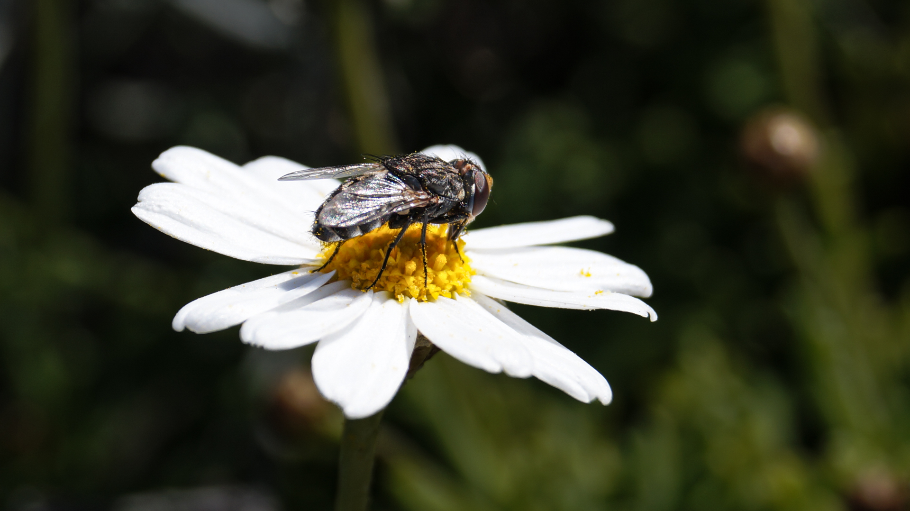

Lugar · relieve
Paisaje volcánico
Una tarjeta más contemplativa, útil para colecciones por entorno o localización.
Esta página no intenta ser una galería cerrada todavía, sino una plantilla elegante para futuras colecciones por especie, lugar o hábitat. La idea es que luego podamos conectar aquí la búsqueda real, las etiquetas y una capa más inteligente sin rehacer el diseño.
Una tarjeta más contemplativa, útil para colecciones por entorno o localización.

Sirve para fotos ligadas a entidades, salidas o series documentales.

Pensada para hábitats, atmósferas o recorridos con identidad propia.

Encaja bien con colecciones más divulgativas o de conservación.

Una línea muy útil si luego quieres explorar por medios donde viven las especies.

También puede funcionar para colecciones pequeñas o más íntimas.